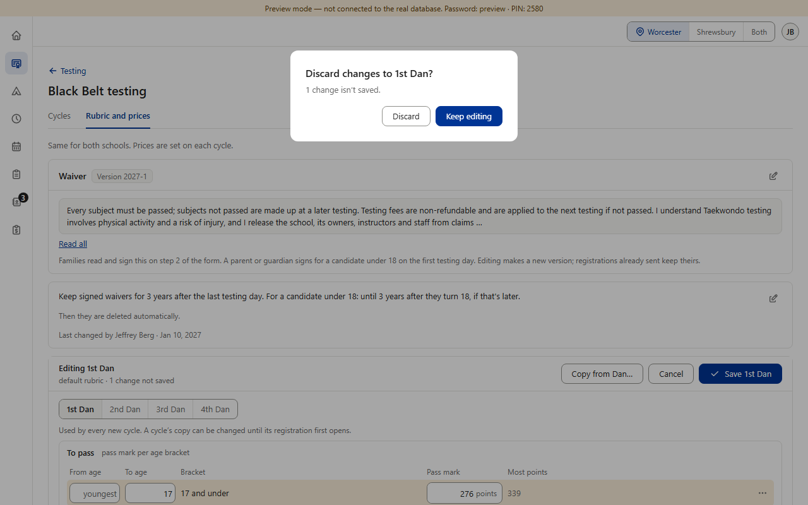
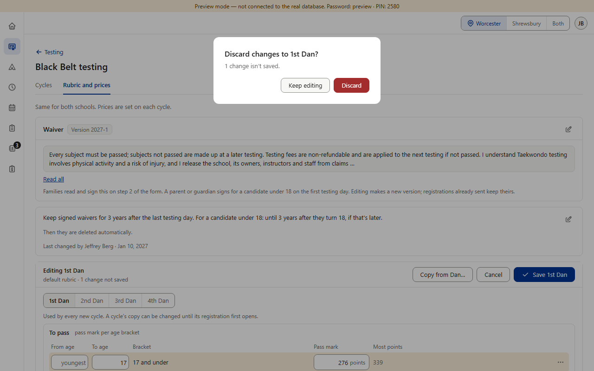
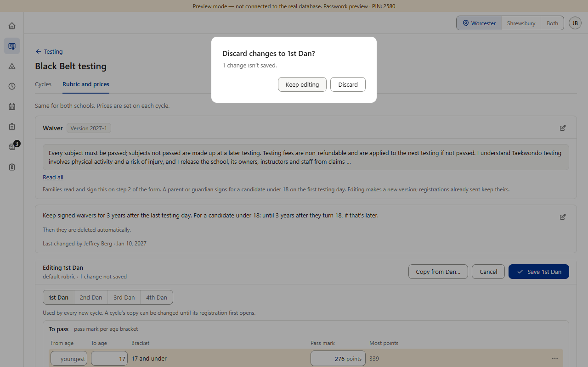

Open detail D10a · Black Belt's “Discard changes?” box under the new red rule
Found while writing the rulebook rows; for Black Belt's prompt. Black Belt's rubric editor asks “Discard changes to 1st Dan?” when someone leaves with unsaved changes (v0.928). v0.932 made Discard plain and Keep editing the blue, focused choice on the right, because red then meant “delete or remove” only (old §7). The rows now say: red means gone for good (item 7), and every “are you sure?” box puts the button that changes nothing on the left, focused first, and the action on the right — red when it loses something for good (D1c). Discarding loses the typed changes for good, so this box is the same kind as the three “… isn't saved” leave warnings that D1c swapped (picture 2). (Preview screenshots · PC size · fake data)
Today

1. Black Belt → Rubric and prices, leaving with 1 unsaved change: plain Discard on the left; blue Keep editing on the right, focused first (v0.932).
2. The rule as decided for the leave warnings (D1c): “Stay on this page” left and focused, “Leave anyway” right and red.
Options B and C, drawn

3. Option B (recommended): Keep editing on the left, focused first; Discard on the right and red — the same as the leave warnings.

4. Option C: the same order, Discard stays plain.
Pictures 3–4 are drawn over the real box (only its buttons' order and colours); nothing in the app was changed. The phone keeps v0.56's amber note with its “Discard changes” link (v0.928), which isn't a confirm box.
Your choice — one question: does Black Belt's “Discard changes?” box follow the new rule? A · Keep v0.932, written down as an exception.+ no work. − the one box with the safe button on the right in blue, the reverse of every other box; Discard loses work for good without the red. B · Recommended: follow the rule (picture 3). Keep editing left and focused, Discard right and red; changes v0.932. + one rule in every box, the same as the leave warnings. − Black Belt redoes one box. C · Same order, no red (picture 4).+ the order matches every box. − loses work for good without looking like it — the option D1c turned down for the leave warnings.